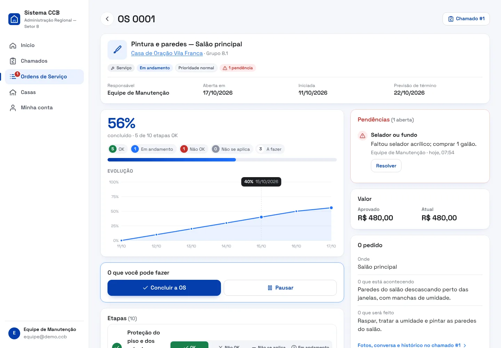
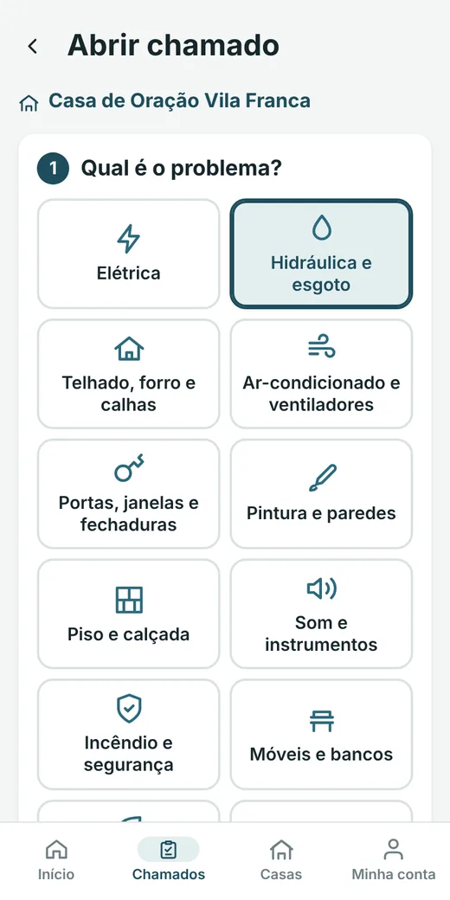
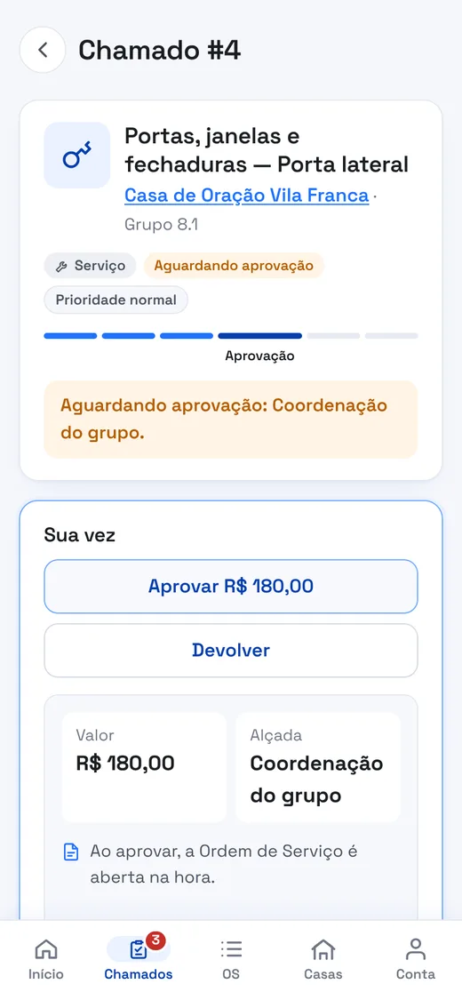
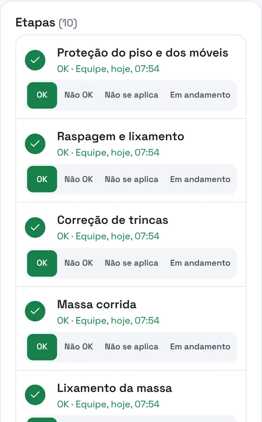
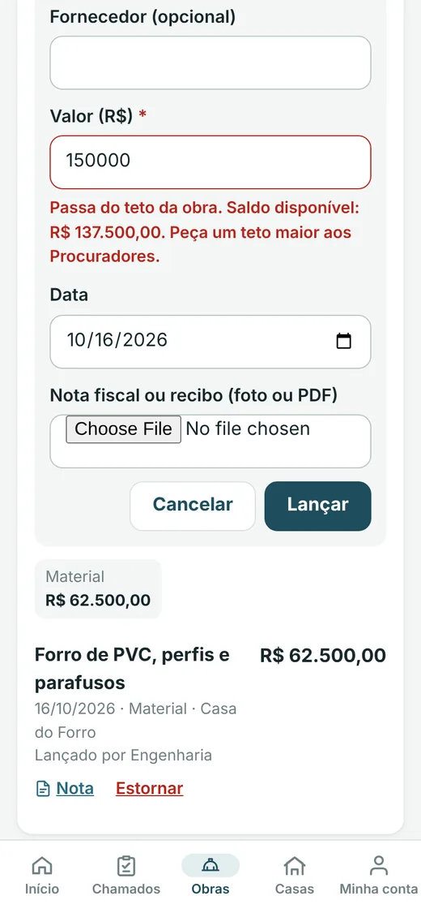
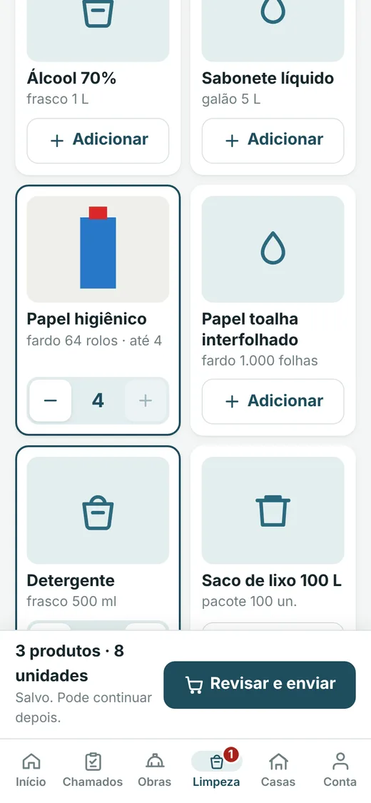
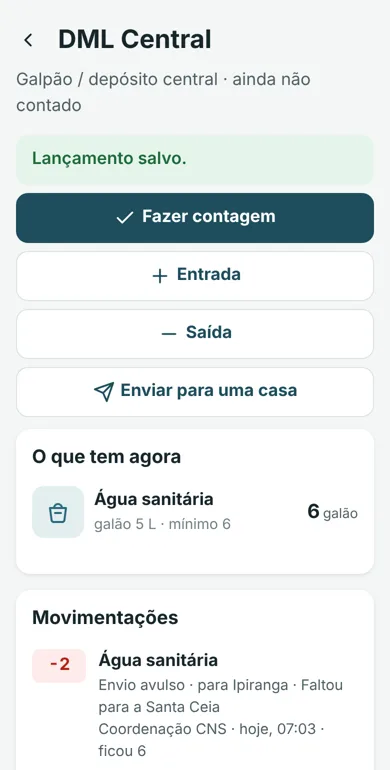

Do pedido da Casa de Oração até a conclusão do serviço, cada etapa registrada e cada aprovação feita por quem tem a responsabilidade — no celular ou no computador.


A Casa de Oração abre o pedido com fotos em poucos toques. O sistema leva o chamado à pessoa certa em cada etapa e mostra para todos em que ponto ele está.
Escolhe o tipo do problema, onde fica e tira fotos.
Define prioridade, área e se é serviço ou obra.
Civil, Elétrica, Segurança, Compras e as demais áreas.
Quem pode aprovar aquele valor aprova ou devolve.
Ordem de serviço com etapas, fotos e pendências.
A casa confirma que o serviço foi feito e o chamado fecha.
O valor do serviço define quem aprova (valores ajustáveis pela Administração). Se o valor subir de faixa durante o serviço, o chamado volta para a nova alçada.



A obra é aprovada uma vez pelos Procuradores, com o valor total. A partir daí, cada nota de material é lançada e o sistema mostra quanto do teto já foi usado.
A casa escolhe os produtos vendo o preço e o total. A orientadora e a Coordenação CNS ajustam e aprovam; Compras recebe a lista pronta.


O acesso é por pessoa e por perfil. Uma mesma pessoa pode ter mais de um perfil, e quem é de uma Casa de Oração enxerga só a sua casa.
Instala pelo navegador, sem loja de aplicativos. Botões grandes, pensado para quem tem pouca familiaridade com tecnologia.
Fotos, dados, ministério e informações da casa, junto com os chamados e o DML dela.
Cada aprovação, ajuste, foto e mudança fica no histórico, com nome e data. Notas e orçamentos guardados por 5 anos.
Entre com o e-mail e a senha que a Administração cadastrou para você. Se ainda não tem, fale com a Coordenação do seu grupo.
 Sistema CCB
Sistema CCB